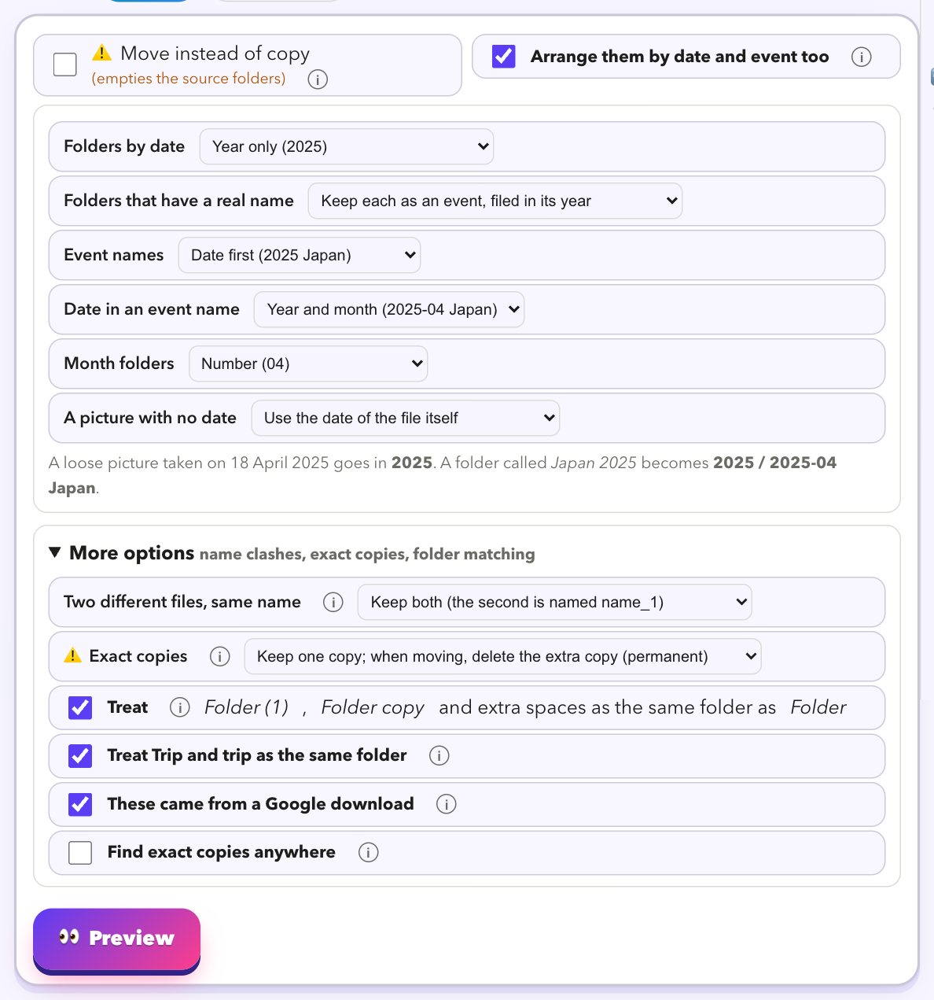
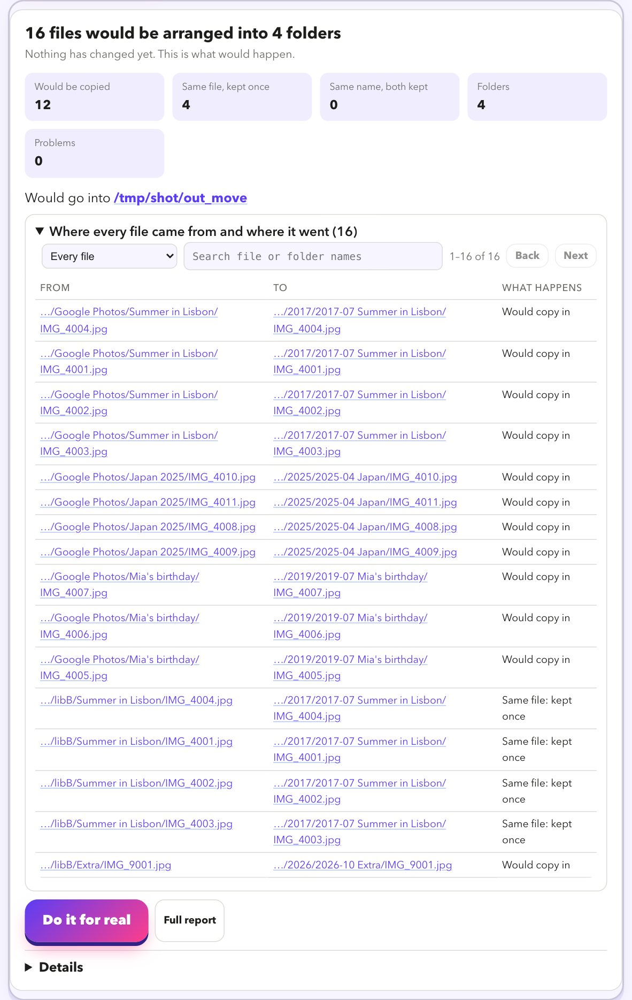

Answers
How do I sort a messy pile of photo folders into neat folders by date?
Short answer: merge the folders, then file every picture by the date it was taken, and keep named folders such as Japan 2025 together as events. Photo Clinic does all three in one preview-first step.
Download for MacThe problem
Years of backups, imports and downloads leave you with folders inside folders: the same trip in three places, Japan 2025 next to japan 2025 (1), loose pictures with no folder at all, and old library folders full of one-picture folders named by the second they were taken. Sorting that by hand takes days.
What you end up with
- Loose pictures go in a folder for their year, month or day, as you choose.
- Folders with a real name (Japan 2025, Mia's birthday) stay together as events, with the date first and filed in their year:
2025 / 2025-04 Japan. - Japan 2025 and 2025 Japan become one folder, and so do Trip and trip (1).
- Identical files are kept once. Two different files with the same name are both kept.
- Old Photos library folders named by the second (
20191013-071453) dissolve, and the pictures go by their date.
The steps
- Add your folders under What to work on, and choose a new, empty folder under Where to save. (Or leave the save folder empty to arrange in place.)
- Open the Move tab, choose A folder, and tick Arrange them by date and event too.
- Pick the layout you like. The default is a folder for the year with a folder for each month inside it (
2025 / 2025-04); year only, year, month and day, or one folder per month are one click away. - Press Preview. You get a list of every file: where it came from and where it would go. Search it, filter it, click a path to see it in Finder.
- Happy? Press Do it for real. Undo this run in Past runs removes the copies or moves the files back.


How it decides the date
- The date the picture was taken, read from the picture itself.
- If there is none, a date in the file name (such as
IMG_20190704). - Then the date in Google's info file, then the dates in the folders it was in.
- Only if you choose, the file's own date. Otherwise it goes in
_undated.
Nothing is deleted, and nothing is guessed. A picture with no date at all can go in an
_undated folder instead of getting a made-up one. Copy is the default, so your originals stay where they are until you are happy.More answers
- Google Takeout photos show the wrong date
- How to fix Google Takeout metadata on a Mac
- What are the .json files in a Google Takeout?
- How to move from Google Photos to Apple Photos
- iCloud Photos stuck syncing on a Mac: slow or stuck?
- How to find and remove duplicate photos on a Mac
Look at your library for free
Download it, point it at your photos, and read the preview. That costs nothing and changes nothing.
Download for MacFree · Apple silicon Macs · signed and checked by Apple